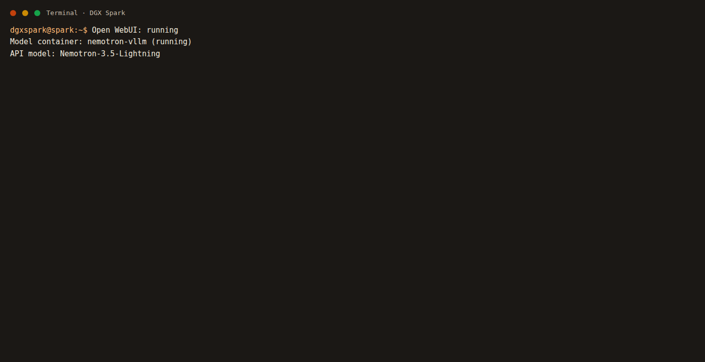
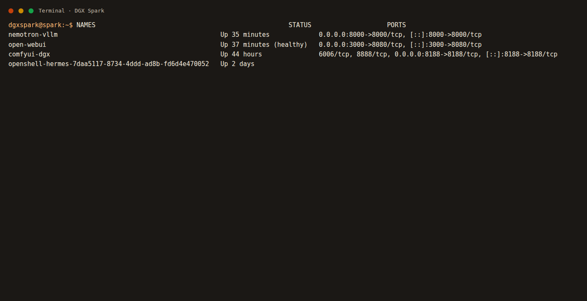
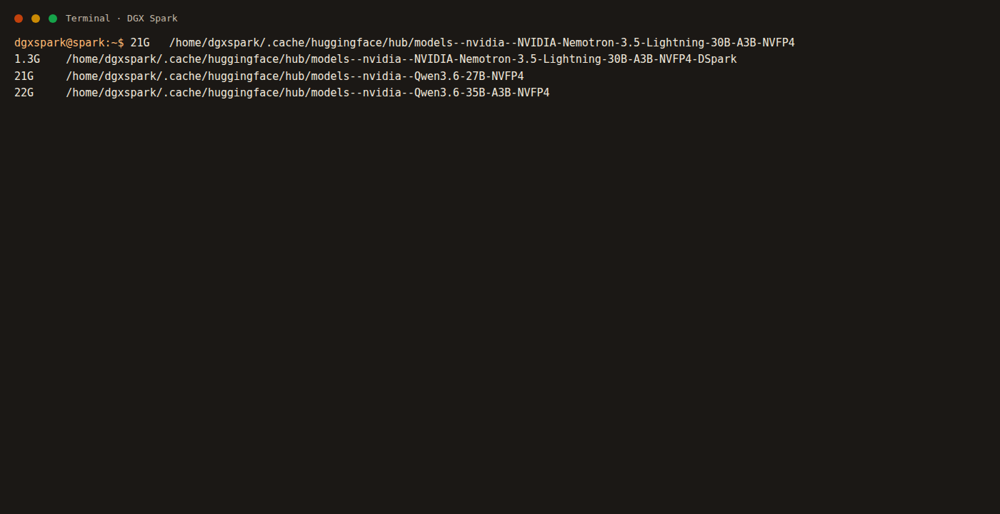
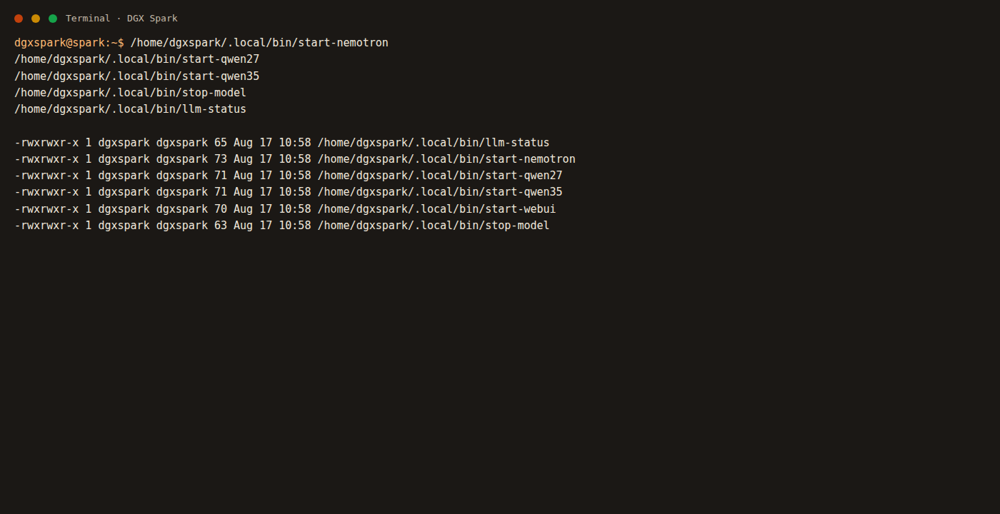

แชท · Open WebUI
หน้าที่คือให้พิมพ์คุย ไม่ได้โหลดโมเดลเอง
หมวดนี้ยังไม่คุยแชท และยังไม่สร้างภาพ ทำแค่ให้พร้อมพิมพ์คำสั่งและรู้ว่าแต่ละพอร์ตเป็นของใคร
NVIDIA DGX Spark มี RAM รวมกับ GPU ก้อนเดียวกันประมาณ 121 GB แยกงานเป็นคนละโปรแกรม ดูรูปจริงด้านล่างแล้วจำไอคอนของแต่ละงาน
หน้าที่คือให้พิมพ์คุย ไม่ได้โหลดโมเดลเอง
โหลด Nemotron หรือ Qwen ขึ้นหน่วยความจำ เปิดได้ทีละตัว
คนละระบบกับแชท ต่อโหนดสร้างรูปหรือคลิปสั้น
อยู่ในกรง sandbox ยิงโมเดลจากพอร์ต 8000
เปิดด้วย claude-local ไม่ใช่หน้าเว็บ ใช้โมเดลก้อนเดียวกับแชท


ถ้าหน้าไม่ขึ้น ให้ดูว่าเปิดผิดช่องหรือยัง จำสี่ตัวเลขนี้ให้ขึ้นใจ
Open WebUI
vLLM เปิดได้ทีละตัว
ComfyUI คนละกราฟกัน
Hermes จากเครื่อง DGX
| งาน | โปรแกรม | ที่อยู่ | คำสั่งเปิด | คำสั่งปิด |
|---|---|---|---|---|
| หน้าเว็บแชท | Open WebUI | :18473 | start-webui | stop-webui |
| โมเดล Nemotron | vLLM · จอง 60% · บริบท 500k | :8000 | start-nemotron | stop-model |
| โมเดล Qwen 27B | vLLM · จอง 50% | :8000 ช่องเดียวกัน | start-qwen27 | stop-model |
| โมเดล Qwen 35B | vLLM · ชื่อเต็มที่ Hermes ใช้ · จอง 35% | :8000 ช่องเดียวกัน | start-qwen35 | stop-model |
| สร้างภาพ | ComfyUI | :8188 | docker start comfyui-dgx | docker stop comfyui-dgx |
| เอเจนต์ Hermes | NemoClaw sandbox | :18789 | nemoclaw hermes start | nemoclaw hermes stop |
| เขียนโค้ด Pro | Claude Code → Anthropic | คลาวด์ ต้องล็อกอิน | claude-use login แล้ว claude-use pro | /exit หรือ claude-use logout |
| เขียนโค้ด local | Claude Code → vLLM | :8000 คนละโปรแกรมกับแชท | claude-use local | ออกจากเซสชัน แล้ว stop-model ถ้าเลิกใช้โมเดล |
| คู่มือนี้ | เว็บสแตติก | :8790 | start-guide | stop-guide |
ภาพด้านล่างแคปจากคำสั่งจริงบนเครื่องนี้ วันที่ 17 สิงหาคม 2026 ตอนเขียนหมวดนี้เครื่องสลับมาที่ Qwen 35B แล้ว

vllm-qwen35 API มีทั้งชื่อเต็มและชื่อสั้น
llm-status จะเปลี่ยนชื่อตามตัวที่โหลด

llm-status ขึ้นชื่อโมเดล~/ai/comfyui/modelsคำสั่งเปิด-ปิดโมเดลพิมพ์ในเทอร์มินัลบนเครื่อง DGX ทำทุกข้อตามลำดับ
ถ้าอยู่หน้าจอเครื่องนี้ ใช้คีย์บอร์ดเมาส์ของเครื่องโดยตรง ถ้าอยู่เครื่องอื่น ให้รีโมตด้วย AnyDesk หรือ SSH มาก่อน
กด Ctrl + Alt + T พร้อมกันแล้วปล่อย หรือคลิกมุมล่างซ้ายของ GNOME แล้วพิมพ์ Terminal แล้วกด Enter
ต้องเห็นเคอร์เซอร์กระพริบหลังข้อความประมาณ dgxspark@spark:~$ อย่าพิมพ์คำสั่งในช่องค้นหาของเว็บ
llm-status
Open WebUI: running = หน้าเว็บแชทเปิดแล้วModel container: ... (running) = มีโมเดลโหลดอยู่ กิน RAM มากAPI model: ... = ชื่อโมเดลที่หน้าเว็บจะเลือกได้Model: stopped = ยังคุยไม่ได้ ไปหมวดโมเดลdocker ps --format 'table {{.Names}}\t{{.Status}}\t{{.Ports}}'
start-nemotron start-qwen27 start-qwen35 stop-model อยู่ใน ~/.local/bin